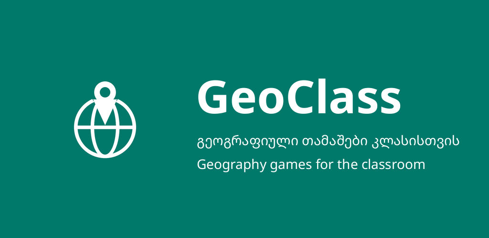
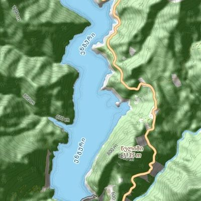
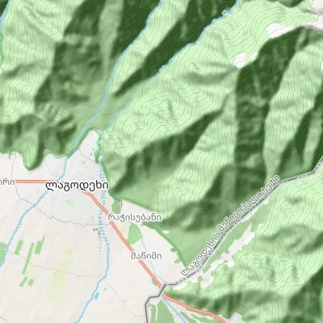
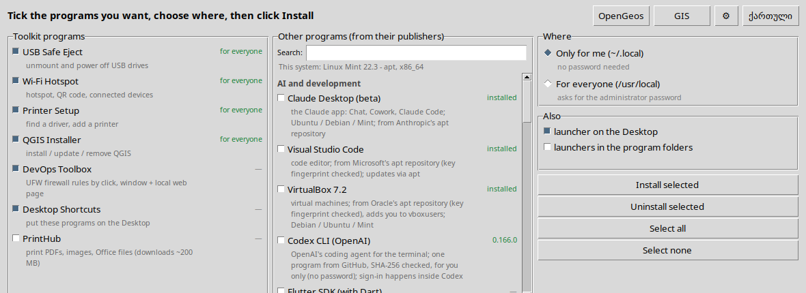

სამი ღია (MIT) პროექტი: GIS_BOX — GIS ხელსაწყოები ერთ ფანჯარაში, GeoClass — საკლასო გეოგრაფიული თამაშები, linux-scripts — Linux-ის პატარა ხელსაწყოები. ფაქტები გადამოწმებულია 2026-11-21-ზე რეპოზიტორიებში.Three open-source (MIT) projects: GIS_BOX — GIS tools in one window, GeoClass — classroom geography games, linux-scripts — small Linux utilities. Facts checked on 2026-11-21 in the repositories.
მიმოხილვაOverview
სამი პროექტი ერთი შეხედვითThree projects at a glance
პროექტიProject
რა არისWhat it is
GIS_BOX
GIS ხელსაწყოები ერთ ფანჯარაში: ნაკვეთის ძებნა, კოორდინატები, DWG → Shapefile · 2026-08-20 → 11-04GIS tools in one window: parcel search, coordinates, DWG → Shapefile · 2026-08-20 → 11-04
GeoClass
საკლასო გეოგრაფიული თამაშები QR კოდით და ცოცხალი რუკით · 2026-11-02 → 11-15Classroom geography games with QR codes and a live map · 2026-11-02 → 11-15
linux-scripts
Linux-ის პატარა ხელსაწყოები, მათ შორის QGIS-ის დამყენებელი · 2026-10-14 → 11-16Small Linux utilities, including a QGIS installer · 2026-10-14 → 11-16
სამივე პროექტი MIT ლიცენზიითაა. თარიღები git ისტორიიდანაა: GIS_BOX 2026-08-20 → 11-04, GeoClass 2026-11-02 → 11-15, linux-scripts 2026-10-14 → 11-16.All three are MIT licensed. Dates come from git history: GIS_BOX 2026-08-20 → 11-04, GeoClass 2026-11-02 → 11-15, linux-scripts 2026-10-14 → 11-16.
GeoClassGeoClass
GeoClass: გაკვეთილი ტელეფონებით და ცოცხალი რუკითGeoClass: a lesson with phones and a live map
მასწავლებელი აჩვენებს QR კოდს, მოსწავლეები ტელეფონიდან პასუხობენ ანონიმურად, პასუხები ჩნდება რუკაზე
VI–IX კლასებისთვის; ქართული და English
Web (PWA), Android, Windows და Linux ერთი კოდიდან
ცოცხალი: geoclass.qgis.ge · v1.0.0 (2026-11-11)
The teacher shows a QR code, students answer anonymously on their phones, answers appear on a map
For grades VI–IX; Georgian and English
Web (PWA), Android, Windows and Linux from one codebase
Live: geoclass.qgis.ge · v1.0.0 (2026-11-11)
სურათი — geoclass.qgis.ge-ს საწყისი გვერდი (მასწავლებლის შესვლა; ქვემოთ QR). წყარო: README, GitHub release v1.0.0.The image is the geoclass.qgis.ge start page (teacher sign-in; QR below). Source: README, GitHub release v1.0.0.
თამაშებიGames
რას აკეთებენ მოსწავლეებიWhat students do
თამაშიGame
რას ვარჯიშობენWhat it practises
სად გაემგზავრებოდი? / Where would you travel?
წერტილი რუკაზე და მიზეზი — ონლაინ რუკის გამოყენებაA point on the map and a reason — using an online map
კოორდინატები / Coordinates
DD, DM, DMS და UTM; ადგილის პოვნა კოორდინატითDD, DM, DMS and UTM; finding a place by coordinates
საჰაერო ფოტო / Aerial photo
სად არის გადაღებული ფოტო ზემოდანWhere a photo from above was taken
ბარათები / Cards
ერთი და იგივე ადგილის პოვნა სხვადასხვა მასშტაბზეFinding the same place at different scales
ფერადი ფირფიტები / Colour plates
ფერადი წერტილებში დამალული რეგიონი ან ქვეყანაA region or country hidden in coloured dots
რუკის პაზლი / Map puzzle
საქართველოს აწყობა რეგიონებიდან და მუნიციპალიტეტებიდანPutting Georgia together from regions and municipalities
რუკის მაკეტი / Map layout
სათაური, ისარი, ლეგენდა, მასშტაბი; A4 PDFTitle, north arrow, legend, scale; A4 PDF
ცხრილი README-ის თამაშების სიიდანაა (სრულად ჩამოთვლილია 9 თამაში; აქ 7 გვაჩვენებ). README-ის გარდა კოდში ახალი „GIS ლაბორატორიის“ თამაშებიცაა — იხილეთ შემდეგი სლაიდი.The table comes from the README games list (nine games in total; seven shown here). Besides the README the code has newer “GIS lab” games — see the next slide.
GIS ლაბორატორიაGIS lab
ახალი თამაშები: რელიეფი და ანალიზიNew games: terrain and analysis

რელიეფის პროფილი, დახრილობა, ხილვადობა
წყალგამყოფი (watershed) და მისი გაგრძელება DEM-დან
ყველაზე იაფი გზა (least-cost path)
თემატური რუკა (კლასიფიკაცია) და თანამგზავრული დროის გასწვრივი თამაში
112: ადგილის შეტყობინება მასწავლებლის შაბლონებით
Terrain profile, slope, viewshed
Watershed and its continuation derived from the DEM
Least-cost path
Thematic map (classification) and a satellite time-lapse game
112: reporting your location with teacher templates
წყარო: lib/games/registry.dart-ის თამაშები და commit-ები 2026-11-13 → 15 („Phase 2 Task 5–9“, „thematic map game“, „watershed level 2“, „satellite time-lapse game“, „112 game“). README ჯერ ამ თამაშებს არ აღწერს. რელიეფის თამაშები DEM-ზეა დაფუძნებული; დეტალები რეპოში.Source: games in lib/games/registry.dart and commits of 2026-11-13 → 15 (“Phase 2 Task 5–9”, “thematic map game”, “watershed level 2”, “satellite time-lapse game”, “112 game”). The README does not describe these yet. The terrain games are DEM-based; details are in the repo.
თამაშიGame
ბარათები: იპოვე ერთი და იგივე ადგილიCards: find the same place
ენგური · დიდი მასშტაბიEnguri · larger scale

ენგური · პატარა მასშტაბიEnguri · smaller scaleლაგოდეხი · დიდი მასშტაბიLagodekhi · larger scale

ლაგოდეხი · პატარა მასშტაბიLagodekhi · smaller scale
ბარათები GeoClass-ის რეპოდანაა (web/cards). README-ის მიხედვით სურათები OpenStreetMap-ისა და Tracestrack Topo-ს შრეებიდანაა და მათი კრედიტი აპლიკაციაში ყოველთვის ჩანს.The cards come from the GeoClass repo (web/cards). Per the README the pictures come from OpenStreetMap and Tracestrack Topo layers and their credit is always shown in the app.
კონფიდენციალობაPrivacy
GeoClass: მოსწავლისგან არაფერს ვითხოვთGeoClass: we ask students for nothing
ანგარიში, სახელი, ელფოსტა ან ტელეფონი არ სჭირდება — მხოლოდ შემთხვევითი კოდი მოწყობილობაზე
სესიები ავტომატურად იშლება 6 თვის შემდეგ
მოსწავლეს შეუძლია საკუთარი პასუხების წაშლა
კავშირის გაწყვეტისას პასუხები ელოდება და მოგვიანებით იგზავნება
აპლიკაცია cookies-ს არ ადგენს
No account, name, email or phone — only a random code made on the device
Sessions are deleted automatically after 6 months
A student can delete their own answers
When the connection drops, answers wait and are sent later
The app sets no cookies
წყარო: GeoClass README, სექცია „Privacy and GDPR“ და „Features“. კონფიდენციალობის პოლიტიკა — web/privacy/index.html.Source: GeoClass README, sections “Privacy and GDPR” and “Features”. The privacy policy is web/privacy/index.html.
linux-scriptslinux-scripts
linux-scripts: პატარა ხელსაწყოები Linux-ისთვისlinux-scripts: small tools for Linux

თითო საქაღალდე — თითო ხელსაწყო: USB-ის უსაფრთხო გამორთვა, Wi-Fi hotspot QR კოდით, პრინტერის დაყენება
PrintHub (ბეჭდვა), ერთი ფანჯარა მრავალი პროგრამის დასაყენებლად, DevOps Toolbox
უმეტესს აქვს ფანჯარა (EN / ქართული) და ბრძანების ხაზიც
One folder per tool: safe USB eject, a Wi-Fi hotspot with a QR code, printer setup
PrintHub (printing), one window to install many programs, DevOps Toolbox
Most have a window (EN / Georgian) and a command line
სურათი — „Toolkit Installer“-ის ფანჯარა (ნამდვილი ეკრანის სურათი, ზედა ნაწილი). წყარო: README, ხელსაწყოების ცხრილი.The image is the “Toolkit Installer” window (a real screenshot, top part). Source: README, tools table.
გეოგრაფებისთვისFor geographers
QGIS-ის დაყენება ისე, როგორც შენ აირჩევInstalling QGIS the way you choose
დიაგნოსტიკა (doctor), plugin-ების დამოკიდებულებები, ოფლაინ ასლი, სრული წაშლა
ცალკე „GIS toolbox“ ჩანართი: QGIS, SAGA, SpatiaLite
Official repository (latest / LTR / nightly), Flatpak, distribution package, AUR
Doctor, plugin dependencies, an offline copy, full removal
A “GIS toolbox” tab: QGIS, SAGA, SpatiaLite
სურათი — qgis-installer-ის ფანჯარა (ნამდვილი ეკრანის სურათი). წყარო: README და CHANGELOG (“GIS toolbox tab”, 2026-11-09 … 15).The image is the qgis-installer window (a real screenshot). Source: README and CHANGELOG (“GIS toolbox tab”, 2026-11-09 … 15).
საიმედოობაReliability
ფრთხილი დაყენება და განახლებაCareful install and update
install.sh არასოდეს გადაწერს ან წაშლის ფაილს, რომელიც მას არ ჩაუწერია
ჩაწერილი ფაილები (გზა და SHA-256) ინახება manifest-ში; არის --dry-run
CI ამოწმებს Debian 12, Ubuntu 22.04 და 24.04, Fedora, Arch, openSUSE Tumbleweed და Alpine-ზე
Python 3.8–3.13; ყოველი ცვლილება — pull request, რომელმაც CI გაიარა
install.sh never overwrites or removes a file it did not write
Installed files (path and SHA-256) are recorded in a manifest; there is a --dry-run
CI checks Debian 12, Ubuntu 22.04 and 24.04, Fedora, Arch, openSUSE Tumbleweed and Alpine
Python 3.8–3.13; every change is a pull request that passed CI
წყარო: linux-scripts README (“Supported systems”, “Install”) და CHANGELOG (“safer updates, installs and CI”, 2026-11-16).Source: linux-scripts README (“Supported systems”, “Install”) and CHANGELOG (“safer updates, installs and CI”, 2026-11-16).
AIAI
როგორ დამეხმარა AI სამივე პროექტშიHow AI helped across all three projects
101 / 102
GIS_BOX: commit-ი Claude-ის co-author ჩანაწერითGIS_BOX: commits with a Claude co-author trailer
49 / 49
GeoClass: commit-ი Claude-ის co-author ჩანაწერით (14 დღე)GeoClass: commits with a Claude co-author trailer (14 days)
128 / 194
linux-scripts: commit-ი Claude-ის co-author ჩანაწერითlinux-scripts: commits with a Claude co-author trailer
3
ღია MIT პროექტიopen MIT projects
ციფრები git ისტორიიდანაა: „Co-Authored-By: Claude“ ხაზები commit-ის ტექსტშიNumbers come from git history: “Co-Authored-By: Claude” lines in the commit text
თითო რეპოში დათვლილია commit-ები, რომლებიც შეიცავს „Co-Authored-By: Claude“ ხაზს. ეს გვიჩვენებს AI-თან თანაავტორობის მასშტაბს და არა ხარისხს. [აქ დაამატე შენი სიტყვები]In each repo we counted commits that contain a “Co-Authored-By: Claude” line. This shows the scale of AI co-authorship, not quality. [Add your own words here]
სამი QR კოდი სამ GitHub რეპოზიტორიას ხსნის. GeoClass ცოცხლადაც ხელმისაწვდომია: geoclass.qgis.ge.Three QR codes open the three GitHub repositories. GeoClass is also live: geoclass.qgis.ge.